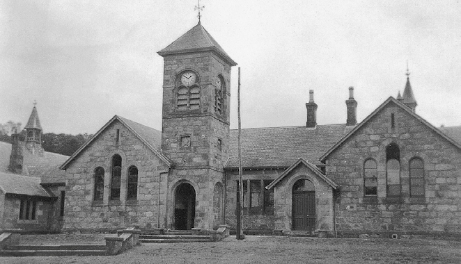
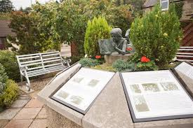

Clock Tower

The clock tower, on the site of the old orphanage, is all that remains of the original building. It was funded by money from Margaret Macpherson Grant, a local woman who had inherited a vast fortune from her uncle, Alexander Grant. Alexander became very wealthy through his estates and business interests as a merchant and enslaver in Jamaica.
Canon Charles Jupp founded the Aberlour Orphanage in 1875 when he began his work caring for children who were destitute in Scotland. What started out as a home for “four mitherless bairns” at Burnside, a small cottage by the Lour Burn, grew into a large orphanage that housed 500 children. This last remaining part of the old building means a lot to many people who support Aberlour's work with many children from all over Scotland.
The Memorial Gardens

To make this a place local people could be proud of, and to tell the story of Aberlour Orphanage, the Aberlour Childcare Trust created the Aberlour memorial garden, sited through the lane to the rear of the clock tower. The generosity of one of their most-committed, long-term supporters saw the installation of information panels at the memorial garden. These panels give details of the history of the orphanage and provide a reminder for the many old boys and girls who make the pilgrimage back to the orphanage site.
Sydney Liddell was a consistent donor to Aberlour to commemorate the upbringing of his wife Ethel, who spent her childhood at the orphanage between 1928 and 1938. The memorial garden and clock tower will be maintained in the years to come because of Ethel and Sydney's generous donations to Aberlour.
There are two trees in the garden, symbolic of the joyful 50 years they spent together and of the happy times Ethel spent there as a child. There are photographs of the children who once played where the memorial garden now stands, and who stood under the clock tower on their way to school.
There is a statue of a young girl in the garden, whom the locals have named Matilda. She is reading a fairy tale lying on a bed of heather, happy to be in such a peaceful place.